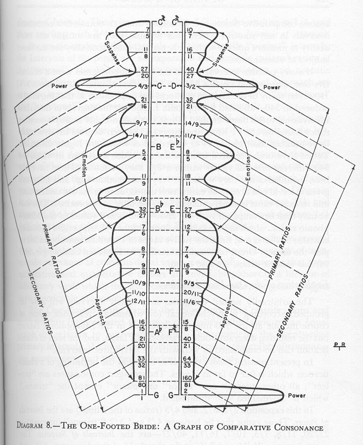

Explication of the One-Footed Bride
The arbitrarily named categories into which intervals will now be grouped, according to psychological (or whimsical) reactions, could of course include all the 340 intervals contained in the Monophonic fabric, but the resulting diagram would be awkwardly large, and the idea of classification can be established as well with the forty-three intervals.
In present musical theory there is to be found the beginning of a classification which is fair so far as it goes. The strongest consonances are "perfect"; all other intervals are "major" or "minor" except the "tritone" which is "augmented" or "diminished".
In this exposition 2/1, 3/2, and 4/3 (ratios of the three limit) are the Intervals of Power. Those ratios that lie between 4/3 and 3/2 ("tritone" intervals) - 27/20, 11/8, 7/5, 10/7, 16/11, 40/27 - are the Intervals of Suspense. The ratios between 21/16 and 7/6, at the threshold of the descent to 1/1, and those between 32/31 and 12/7, a the threshold of the ascent to 2/1, are the Emotional Intervals. The ratios starting with 8/7 and descending to 1/1, and those starting with 7/4 and ascending to 2/1, are the Intervals of Approach.
For music students the Intervals of Power are the "perfect" intervals; the Intervals of Suspense are an expansion and acoustic rationalization of the "tritone"; the Emotional Intervals are an expansion and acoustic rationalization of "thirds" and "sixths"; and the Intervals of Approach are acoustic intervals which are varying amounts of "seconds" ("whole tone" and "semitone") and "sevenths" ("major" and "minor").
If, starting with 7/5 at the top left and 10/7 at the top right, the Monophonic ratios are placed in columns, descending in pitch on the left, and ascending in pitch on the right, each ratio will be exactly opposite its complement. And if, in addition, a heavy line is drawn, toward the outer edges of the page for the more consonant intervals and toward the ratios themselves for the more dissonant intervals (in other words, a graph of consonance for each column of ratios), the result will be as depicted in Diagram 8, those ratios on the right ascending to the supreme consonance of 2/1, and those on the left descending to the absolute eclipse of interval distance 1/1 (which is partly why the One-Footed Bride is so called).
It is fairly foolish to undertake to pin consonance to a graph less general than this unless it is predicated on specific range, specific quality of tone, specific relevance of combinational tones, and specific assurance that these qualitative and quantitative factors are invariable. Short of a lifetime of laboratory work which the composer cannot undertake, the general is the only practicable approach.